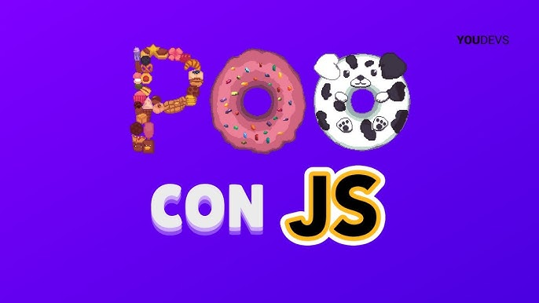
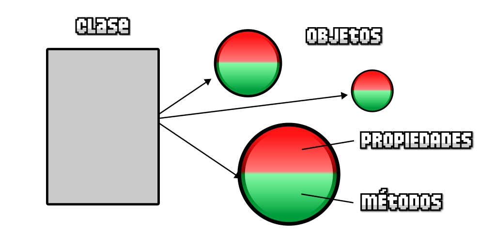

Preguntas Teoricas
La Programación Orientada a Objetos (POO, o en inglés OOP) es un estilo de programación muy utilizado, donde creas y utilizas estructuras de datos de una forma muy similar a la vida real, lo que facilita considerablemente la forma de planificar y preparar el código de tus programas o aplicaciones.
Una de las partes más complejas cuando estás empezando en el mundo de la programación (o incluso cuando ya llevas tiempo) es a la hora de crear las estructuras de datos.
Con ejemplos sencillos, esto no es un problema, sin embargo, cuando los ejercicios se complican, una buena elección de una estructura de datos adecuada puede simplificar mucho el ejercicio, o complicarlo demasiado
Cuando comenzamos a programar, nuestros ejemplos son bastante sencillos y faciles de controlar y modificar. Sin embargo, a medida que tenemos que programar cosas más complejas, todo se vuelve más complicado de organizar. Uno de los problemas más faciles de observar, es que comenzamos a tener una gran cantidad de variables y funciones, que al estar inconexas en nuestro código, es fácil que al seguir añadiendo más variables y funciones, nuestro código se descontrole y se vuelva muy difícil de entender.
Por esa razón, necesitamos una forma de organizar las variables y constantes, las funciones y tenerlo todo bien agrupado, de modo que con el tiempo, sea sencillo de entender, modificar y ampliar. Esa agrupación, en programación, se denomina Clase.
El concepto de orientación a objetos se ve muy claro cuando tenemos en nuestra mente el concepto de Clase. Todos los elementos relacionados con esa Clase los vamos a incluir en su interior. Por un lado, las variables y constantes que teníamos «sueltas» en nuestro programa, las agruparemos dentro de una clase, donde también incluiremos todas las funciones.
🎯 Las variables y constantes incluidas en una clase se denominan propiedades, y se utilizan para guardar información relacionada (se suele denominar estado). Por otro lado, las funciones incluidas en una clase se denominan métodos y se utilizan para realizar una acción relacionada con la clase.
classclass MyClass {
// métodos de clase
constructor() { ... }
method1() { ... }
method2() { ... }
method3() { ... }
...
}Entonces usamos new MyClass() para crear un objeto nuevo con todos los métodos listados.
El método constructor() es llamado automáticamente por new, así podemos inicializar el objeto allí.
class User {
constructor(name) {
this.name = name;
}
sayHi() {
alert(this.name);
}
}
// Uso:
let user = new User("John");
user.sayHi();Cuando se llama a
new User("John")Un objeto nuevo es creado.
El constructor se ejecuta con el argumento dado y lo asigna a this.name.
…Entonces podemos llamar a sus métodos, como
user.sayHi()👁 No va una coma entre métodos de clase
Un tropiezo común en desarrolladores principiantes es poner una coma entre los métodos de clase, lo que resulta en un error de sintaxis.
Piensa, por ejemplo,
En el protagonista (héroe) de un juego. Tiene una serie de variables relacionadas con él (vidas, fuerza, energía, etc...), pero también tiene una serie de funciones relacionadas con él (hablar, disparar, curar, etc...). Todas ellas, las podríamos agrupar en una clase porque tienen relación con ese concepto de personaje:
Personaje
Sin embargo, el concepto de Clase es un concepto abstracto. En el juego, por ejemplo, podríamos tener dos héroes que podemos elegir al principio. Ambos héroes tienen los mismos atributos y funciones, pero son dos personajes diferentes. Por esa razón, en la programación orientada a objetos se tiene un concepto llamado Clase y otro concepto llamado Objeto

class Personaje {
constructor(vidas, fuerza, energia, velocidad) {
this.vidasRestantes = vidas;
this.fuerza = fuerza;
this.energia = energia;
this.velocidad = velocidad;
}
hablar(frase) {
console.log(`[${this.constructor.name}] dice: "${frase}"`);
}
disparar() {
if (this.energia > 0) {
this.energia -= 10; // Reducir la energía al disparar
console.log(
`[${this.constructor.name}] ¡Pew pew! Energía restante: ${this.energia}`
);
} else {
console.log(
`[${this.constructor.name}] No hay suficiente energía para disparar.`
);
}
}
curar() {
if (this.vidasRestantes > 0) {
this.vidasRestantes += 1; // Incrementar las vidas restantes al curar
console.log(
`[${this.constructor.name}] ha sido curado. Vidas restantes: ${this.vidasRestantes}`
);
} else {
console.log(
`[${this.constructor.name}] No se puede curar, ya no quedan vidas.`
);
}
}
}
// Ejemplo de uso:
const miPersonaje = new Personaje(3, 50, 100, 20);
miPersonaje.hablar("¡Hola!");
miPersonaje.disparar();
miPersonaje.curar();
// [Personaje] dice: "¡Hola!"
// [Personaje] ¡Pew pew! Energía restante: 90
// [Personaje] ha sido curado. Vidas restantes: 4
El primero de ellos, la Clase se refiere al concepto abstracto de personaje, mientras que el segundo de ellos, el objeto se refiere a un elemento particular. Por ejemplo, la clase podría ser Personaje, mientras que los objetos serían Mario y Luigi, ya que ambos se basan en un Personaje, pero tienen sus detalles particulares (Mario podría tener más vida, o Luigi más energía, diferentes velocidades, etc...).
Además de proveernos una forma de agrupar y organizar nuestro código y crear nuevos elementos basados en ellas sin repetirnos, las clases nos ofrecen una forma similar a la vida real de crear estructuras de datos, que de otra forma podría ser mucho más complejo.
Si por ejemplo, necesitaramos añadir una variable que indique la velocidad que tiene el personaje, podríamos añadir una propiedad denominada velocidad que contenga un 5. Luego, podríamos incluir un método denominado correr que cambie esa propiedad velocidad a 10, y un método denominado caminar que la vuelva a cambiar a 5.
Como ves, se trata de una forma que se asemeja bastante al mundo real, y puede ser mucho más sencillo para nosotros crear estructuras de datos para nuestros programas porque sólo tenemos que pensar en el elemento en la vida real, e imitarlo al programarlo.
Todo esto puede complicarse bastante, pero una vez sentadas estas bases, ya podemos comenzar a ver un poco de código para entender como funciona la Programación orientada a objetos en Javascript.
La programación orientada a objetos se basa en los siguientes principios o pilares que la sostienen:
Este principio establece que toda la información importante está contenida dentro de un objeto y sólo se expone información selecta. La implementación y el estado de cada objeto se mantienen en privado dentro de una clase definida. Otros objetos no tienen acceso a esta clase ni autoridad para realizar cambios. Sólo pueden llamar a una lista de funciones o métodos públicos. Esta característica de la ocultación de datos proporciona una mayor seguridad al programa y evita la corrupción involuntaria de datos.
Los objetos sólo revelan los mecanismos internos que son relevantes para el uso de otros objetos, ocultando cualquier código de implementación innecesario. La clase derivada puede ver ampliada su funcionalidad. Este concepto puede ayudar a los desarrolladores a realizar más fácilmente cambios o adiciones adicionales a lo largo del tiempo.
Las clases pueden reutilizar código de otras clases. Se pueden asignar relaciones y subclases entre objetos, lo que permite a los desarrolladores reutilizar la lógica común sin dejar de mantener una jerarquía única. Esta propiedad de la programación orientada a objetos obliga a un análisis más exhaustivo de los datos, reduce el tiempo de desarrollo y garantiza un mayor nivel de precisión.
Los objetos están diseñados para compartir comportamientos y pueden adoptar más de una forma. El programa determinará qué significado o uso es necesario para cada ejecución de ese objeto a partir de una clase padre, lo que reduce la necesidad de duplicar código. A continuación, se crea una clase hija, que amplía la funcionalidad de la clase padre. El polimorfismo permite que distintos tipos de objetos pasen por la misma interfaz.
EJERCICIOSEjercicio 1:
Crear una clase Persona en JavaScript con un objeto maria que
tiene niña y edad como atributos y jugar y comer como
métodos:
Ejercicio 2:
Crea una Subclase; Extiende la clase Persona y crea una clase
Niño que incluya información sobre el sexo de la
persona.
Ejercicio 3:
Llama a los metodos del ejercicio 1 y observe el
comportamiento
Algo más dificil ✏ Acepta el ✔ Reto ▶